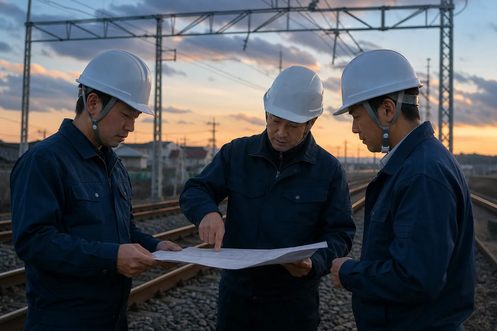
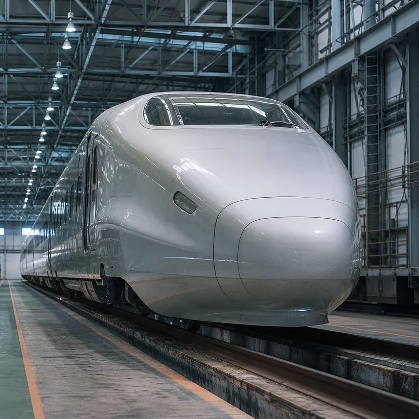

センデックとはAbout
電車を走らせる電気と、
駅を灯す電気。
その両方を、ひとつの会社で。
センデック電気システムは、鉄道と駅の電気設備を専門にする工事会社です。架線に電気を送る電車線、その電気をつくる変電設備、列車の安全を守る信号通信、駅の照明や昇降設備の電源を受け持つ建築電気。この四つの分野を社内に持ち、計画から施工、試験、引き渡しまでを一貫して担っています。
工事の多くは、最終列車が通過してから始発までの数時間に行います。限られた時間で、確実に、もとどおり電車が走れる状態に戻す。私たちの技術は、その積み重ねでできています。

数字で見るセンデックNumbers
2026年4月1日現在の数字です。
- 創業1963年金沢で電車線工事の会社として出発
- 社員数587名うち技術系の社員は482名
- 売上高168億円2026年3月期
- 拠点4か所金沢・富山・福井・長野
- 平均年齢38.6歳20代の社員は全体の31%
- 年間休日121日夜間作業の翌日は休息日
- 有給休暇の平均取得13.2日2025年度の実績
- 新卒入社24名2026年4月入社（大学・高専・高校）
代表メッセージMessage
「明日も同じ時刻に電車が来る」。
その当たり前を、
仕事にしています。
鉄道の電気工事は、うまくいくほど誰にも気づかれません。朝の駅で電車を待つ人は、夜のうちに架線が張り替えられたことも、変電所の機器が新しくなったことも知らずに通り過ぎていきます。私はそれでいいと思っています。気づかれないことが、私たちの仕事の出来ばえだからです。
一方で、気づかれない仕事を続けるには、確かな理由が要ります。手順を省かない理由、もう一度確かめる理由、若手の質問に時間を割く理由。センデックでは、その理由を言葉にして、先輩から後輩へ渡すことを大切にしてきました。
北陸・信越の冬は厳しく、鉄道の設備にとっても過酷です。だからこそ、この地域で技術を磨いた人は強い。電気の知識は入社してからで構いません。地域のくらしを足もとから支える仕事に、手を挙げてくれる人を待っています。
代表取締役社長 芦原 慎司
会社概要Outline
- 社名
- センデック電気システム株式会社
SENDEC Electric Systems Co., Ltd. - 設立
- 1963年（昭和38年）4月
- 資本金
- 4億5,000万円
- 代表者
- 代表取締役社長 芦原 慎司
- 社員数
- 587名（2026年4月1日現在）
- 売上高
- 168億円（2026年3月期）
- 事業内容
- 鉄道電気工事（電車線・変電・信号通信）／駅舎・駅ビルの建築電気工事／鉄道電気設備の点検・保守
- 主な発注者
- 北陸・信越地域の鉄道事業者、駅ビル・商業施設の管理会社、自治体 ほか
- 本社
- 〒920-0031 石川県金沢市広岡三丁目9-12 センデック本社ビル
TEL 076-297-3180 FAX 076-297-3181 - 事業所
- 富山営業所／福井営業所／長野営業所
あゆみHistory
- 1963
金沢市に電車線工事の専門会社として創業。社員9名でのスタート。
- 1978
富山営業所を開設。変電設備の工事に事業を広げる。
- 1991
信号通信の工事部門を新設し、鉄道電気の三分野がそろう。
- 1998
福井営業所を開設。駅舎の照明・電源を担う建築電気部門を立ち上げる。
- 2012
長野営業所を開設し、信越方面の工事を本格的に受け持つ。
- 2019
本社を現在の広岡に移転。社内に架線の実習設備を備えた研修棟を併設。
- 2023
創業60年。社員数が550名を超える。
事業所Offices
- 本社
金沢本社
石川県金沢市広岡三丁目9-12
センデック本社ビルTEL 076-297-3180
管理部門・研修棟。石川県内の工事を担当
- 営業所
富山営業所
富山県富山市田中町五丁目3-21
TEL 076-461-2280
富山県内の電車線・変電工事を担当
- 営業所
福井営業所
福井県福井市花堂中一丁目4-8
TEL 0776-28-5610
福井県内の駅設備・建築電気工事を担当
- 営業所
長野営業所
長野県長野市川合新田1180-3
TEL 026-217-4930
長野・新潟方面の信号通信工事を担当